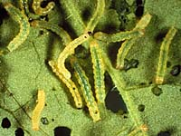

|
|

|
|
|
|
|
|
Bertha armyworm (Mamestra
confgurata) is native to
North America and belongs to a group of insects referred to as
"climbing cutworms." Also included in this group are
the true armyworm and variegated cutworm. Bertha armyworm is one of the most important insect pests of canola
in Canada.
In most years, populations are kept low by unfavourable
environmental conditions, parasites, predators, and diseases.
But when natural regulators fail, populations increase dramatically
causing widespread damage to a variety of broadleaf crops. Infestations may be localized or spread over millions of acres. In extreme
situations, infestations of more than 1000 larvae per square metre
have been reported while densities of 50 to 200 larvae per square
metre may be common.
Are crops of Saskatchewan at risk?
Bertha armyworm occurs throughout Manitoba, Saskatchewan,
Alberta and into the interior of British Columbia.
Severe infestations can occur throughout most of this area but are usually limited to the parkland area of the Prairies and the Peace River region of British Columbia and Alberta.
|
Failure to detect an infestation early could
result in widespread crop destruction. Provided producers monitor their crops and detect the infestation early, widespread infestations over
hundreds of thousands of acres can be controlled with available
insecticides and application equipment. However, failure to detect
infestations early may lead to temporary insecticide shortages,
inadequate time to apply them, and unavoidable crop destruction.
What plants are most at risk?
Bertha armyworm feeds on a wide variety of cultivated crops and
weeds. Only canola, rapeseed, mustard, quinoa, lamb's quarters
and related plants are preferred as host plants. However, once
the primary host plants have been consumed, hungry, nearly-mature
larvae will feed on a variety of plants including alfalfa, beans,
beets, cabbage, corn, flax, lentils, mustard, peas, potato, sweetclover,
tobacco, tomato, turnip, garden vegetables, flowers and a variety
of weeds.
To prevent unnecessary crop losses from
bertha armyworm, it is important to know - the bertha armyworm's
life cycle,
- when and how to monitor,
- the population levels
that warrant control, and
- the recommended insecticides.
What is the life cycle of the insect?
Bertha armyworms develop through four distinct
stages: adult, egg, larva and pupa. In Canada, there is one complete generation per year. In warm years, some pupae
may continue their development and emerge in late August or September.
Life Cycle of Bertha Armyworm
| Adult |
|
Adult Bertha Armyworm
- The emergence of the adult moth from the overwintering
pupae begins in early to mid June and continues until early August.
- The bertha armyworm moth has a wing span of about 38 mm (1.5 inches) and insect is active only at night.
- The forewing is predominantly
gray, and flecked with patches of black, brown, olive and white
scales. Near the middle of the forewing, toward the
leading wing margin (front), there is a prominent, white, kidneyshaped
marking defined with a ring of whitish scales. Near the tip of
the forewing, there is a conspicuous white and olivecolored,
irregular transverse marking that is characteristic of the species
- After emergence, the moths are strongly attracted
to canola fields which are in bloom and secreting nectar.
- Adults
mate within 5 days of emergence and lay their eggs on the preferred
host plants. Each female moth will lay about 2150 eggs but numbers
as high as 3500 eggs per female have been recorded.
|
| Egg |
|
Egg Stage - Bertha Armyworm
- eggs are laid in singlelayered clusters of about
50 500 eggs on the lower surface of the host plant leaves
- eggs are sculptured, ridged and pinhead in size
- are white when first laid, but become darker as they develop
- at average temperatures, the eggs hatch within a week
|
| Larva |
 |
Larval Stage - Bertha Armyworm- The newly hatched bertha armyworm larvae
are about 0.3 cm (1/l0 in ) long.
- They are pale green with a pale
yellowish stripe along each side.
- The larvae difficult to see on the underside of leaves because of their size and color.
- Small larvae may drop off the leaves by a fine silken thread if disturbed. This behavior makes it difficult to distinguish small bertha armyworm larvae from those of the diamondback moth, which display a similar behavior. Large
larvae may drop off the plants and curl up when disturbed, a defensive
behavior typical of cutworms and armyworms.
- The larvae take approximately 6 weeks to complete their development, depending upon temperature. During this period, they moult five times and pass through six stages.
- As larvae mature,
their colouration becomes variable; some larvae remain
green, but many become brown or velvety black
- The larva at maturity will be about 4 centimetres (1.5 inches)
long, and burrow
into the ground and pupate.
Crop damage is caused entirely
by the larvae. It varies with the crop being fed upon, the plant's
growth stage, the growth stage of the larvae and the number of
larvae present.
Small larvae feeding from the underside of the leaves
chew irregularly shaped holes in the leaves but they usually cause
little damage even when population levels are high. Crop damage
accelerates rapidly once the larvae moult to the second last stage.
These larvae are about 13 mm (0.5 inches) in length. Larvae in
the last two larval stages eat about 80 to 90% of the plant
material consumed.
If the plants, especially canola, drop their leaves
before the larvae are mature, the developing larvae will feed
directly upon the seed pods. Seed pods may be "debarked".
More commonly, the larvae chew holes into the seed pods and eat
the seeds. At high population levels, the entire seed pod may be
consumed. Even when the seed pods are only stripped of their outer
green layer, this may contribute to crop losses through premature
shattering.
In flax, the larvae eat flowers and the developing
bolls. But once the flax bolls are full size and start to ripen,
larval feeding is usually limited to the calyx below the boll.
Occasionally, larvae will feed on the green stems of ripening
bowls causing them to drop off.
Significantly crop damage usually occurs within a
three week period between late July to late August depending on
the season and where the crop is grown. |
| Pupa |
|
Pupa Stage - Bertha Armyworm
- A pupa
is a podlike structure the bertha armyworm forms around
itself to protect it while it transforms from the larval stage
to the adult moth.
- Bertha armyworms survive the winter
as pupae in the ground at depths of 5
to 16 cm (2 to 6 in.)
- Pupation usually begins in mid to
late August. All larvae will have pupated by early to mid-September.
If the autumn is unusually warm, some pupae may continue their
development and emerge as moths in late August or September, only
to perish when winter arrives.
- Pupae are reddish brown in color,
about 0.5 to 1.8 cm (02 to 0.7 in.) in size and tapered with flexible,
terminal abdominal segments.
- Bertha armyworm pupae are indistinguishable
from other cutworm pupae.
|
|
|
How is the pest managed?
|
In most years, bertha armyworm
is controlled naturally by biological or environmental factors.
Environmental conditions have a significant impact
on bertha armyworm populations, especially on the overwintering
pupae.During harsh winters in snowfree fields, most bertha armyworm
pupae perish. Bertha armyworm outbreaks appear to be favoured
by snow accumulation which protects pupae from experiencing prolonged
exposure to temperatures below 10°C. The trend toward
reduced tillage and stubble conservation will likely result in
more snow accumulation on infested fields and favour bertha armyworm
survival, especially in years with early snow fall. In addition, newly hatched larvae are especially
vulnerable to inclement weather and diseases.
- Monitoring - It is important to monitor larvae numbers
in each field. Adjacent fields may have very different larval
densities, depending upon how attractive the crop was when the
moths were laying their eggs. Adjacent crops may also have different sized larvae, depending on when the eggs were laid.
For accurate larval estimates in a crop,
samples are taken that are in at least three locations a minimum of 50 metres apart. The plants are beaten to dislodge the larvae. The plants are then pushed aside and a count is taken of the number of larvae in the square metre area. As few as 20 larvae per square meter can reduce canola yields by 1.16 bushels/acre.
Adult populations can be monitored using traps which
attract the male moths with pheromones or synthetic sex attractant.
Changes in the number of moths collected by these traps correspond
to the fluctuations in bertha armyworm larval populations. The
higher the trap catches the more likely larval populations will
exceed economic thresholds.
-
Biological Control - There
are a number of diseases and parasites attack the bertha armyworm
including: a nuclear polyhedrosis virus, an ichneumonid
wasp, and a tachinid fly. These natural enemies often do not destroy larvae until after considerable damage has occurred. These biological agents have their greatest impact on reducing the number of armyworm produced a year or two after the peak of an outbreak and are probably the reason that severe infestations only last 2 or 3 years. Their presence in a crop does not however, indicate that control measures are not warranted.
- Cultural Control - Manipulation
of bertha armyworm populations by tillage, planting alternative
crops, altering seeding dates, seeding different cultivars, effective
weed control, early swathing, and fall cultivation are methods
that may be used to reduce crop loss.
Fall cultivation has been suggested as a way to kill
bertha armyworm pupae. Fall cultivation minimizes the amount of
snow trapped on a field and exposes pupae to subzero temperatures.
Although this practice may be effective for individual fields,
fall cultivation is not likely to be effective unless it is adopted
by air producers since adult moths are strong flyers.
Altering seeding dates may help to reduce bertha
armyworm infestations. Also, Polish and Argentine type canola
seeded on the same dates are likely to infested at different levels.
Bertha armyworm infestations in flax, peas, lentils
and sugar beets can be reduced with adequate weed control. Controlling
lamb's quarters and wild mustard early prevents infestation
because larvae first feed upon the weeds and then move onto crops after the weeds have been destroyed.
Early swathing can be used to limit damage when the
crop is very close to mature and weather conditions are warm and
dry. The technique has merit if the crop is within a couple of
days of normal swathing and the bertha armyworm population does
not greatly exceed the economic threshold. However, problems may
occur if larval populations are underestimated or the canola crop
is swathed too early. High larval densities may result in serious
damage to swaths because larvae will continue to feed either until
they are mature or the crop dries to the pointwhere it is
no longer acceptable as food. Once canola is swathed the option
of controlling the population with insecticides is no longer possible
and extensive damage may occur. Swathing the crop too early may
also increase the number of green, unripened seeds and adversely
affect seed quality and grade.
Although cultural control practices have merit, most
have not been thoroughly investigated. The precise effect of using
a particular cultural control strategy is unknown and may vary
from year to year. The best option is to select a combination
of crops, varieties, and seeding dates that will minimize the
risk of crop loss.
- Chemical control - Chemical
control is the producers last line-of-defence against
the bertha armyworm. For the best results, an insecticide should
be applied as soon as economic thresholds are reached and before
the larvae have damaged the plants. If producers are to get the
most value from an insecticide application it must be used in
conjunction with an adequate monitoring program. Early detection
of bertha armyworm larvae is critical if crop losses are to be
minimized.
An insecticide application is recommended when bertha armyworm larvae
are abundant enough that they may consume crop valued in excess
of the cost of controlling them. This is referred to as economic threshold. The economic threshold for bertha armyworm varies
with the cost of the insecticide, the method of application, and
the crop's value.
Control is usually achieved with a single, welltimed
application of any of the registered insecticides applied with
aerial or high clearance ground equipment.
|
|
|
|
|